Analyzing a via using Auto Via Assistant
In Virtuoso Layout Suite EXL and higher tiers use the Analyze tab of the Auto Via Assistant to launch auto vias automatically and preview and analyze these vias.
-
In the layout window, choose Window – Assistants – Auto Via Assistant to open Auto Via Assistant.
Alternatively, right-click any empty space on the Layout toolbar and choose to display the Auto Via Assistant.
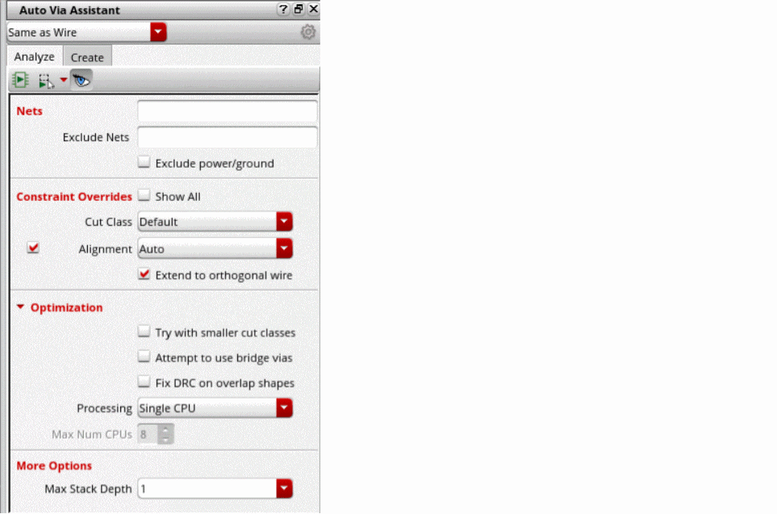 -
Select a constraint group for the analysis of the vias.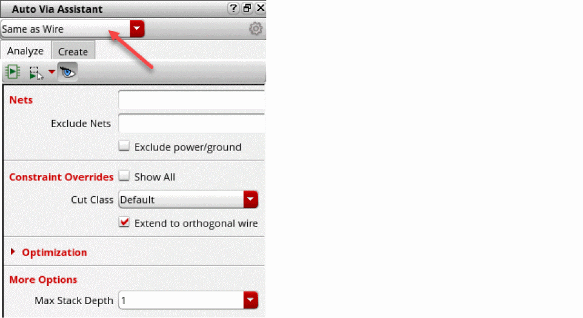
- Specify net names in the Nets field to check the possibility of creating vias for the specified nets.
- Specify net names in the Exclude Nets field to exclude the specified nets from analysis.
- Select Exclude power/ground option to exclude power and ground nets from the analysis.
- Select Show All option in Constraint Overrides field to display constraint override options.
-
Specify constraint override options in fields: Cut Class, Min Num Cuts, Alignment, Cut Class Orient, Cut Array Dir, Enclosure Dir, Place via on centerline, Add Metal, Maximize cut, and Extend to orthogonal wire.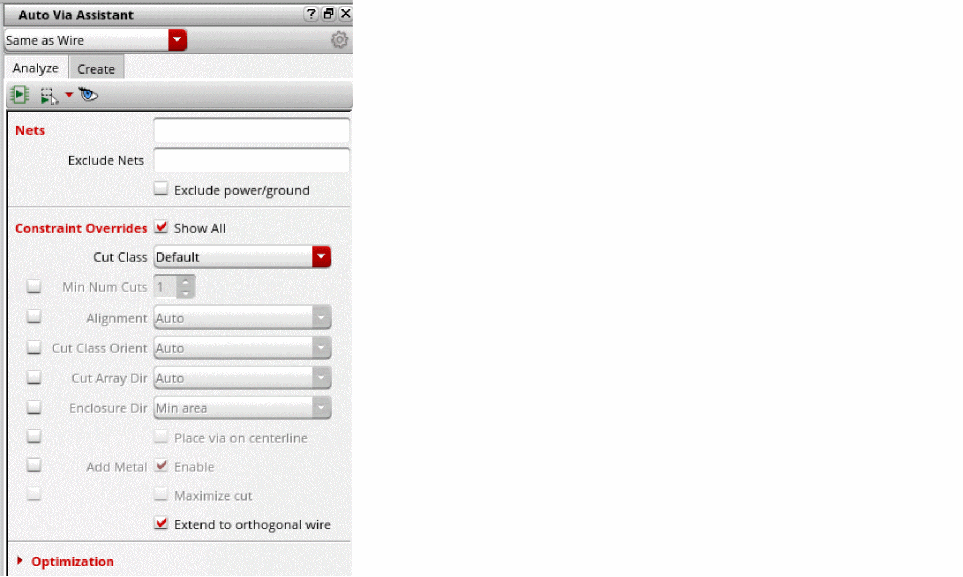
- Specify the analysis optimization options in the fields: Try with smaller cut classes, Attempt to use bridge vias, Fix DRC on overlap shapes, Processing, and Max Num CPUs.
- Specify Max Stack Depth in More Options field.
-
Click 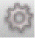
button to set the via creation options using the Auto Via Assistant Options form. 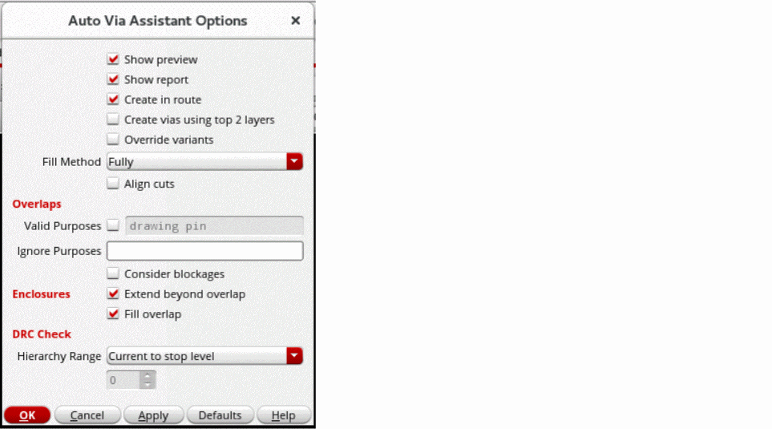For example, select Show preview to see a preview of the vias from analysis, select Show report to see an analysis report generated in the CIW, and Create in route to create every new via in a new route. Also, you can select Extend Enclosure Beyond Overlap to extend via enclosures beyond the overlap region between two intersecting shapes.
Specify the options in the available fields for analyzing auto vias. - Click from the toolbar to run the analysis in the entire cellview.
-
Click
 from the toolbar to run the analysis in a rectangle, polygon, or on visible area. Select the Use entire overlap option to use the entire overlap for analysis.
from the toolbar to run the analysis in a rectangle, polygon, or on visible area. Select the Use entire overlap option to use the entire overlap for analysis. - Click 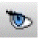 from the toolbar to view the vias that you can create.
An auto via analysis report is generated in the CIW, as shown below.
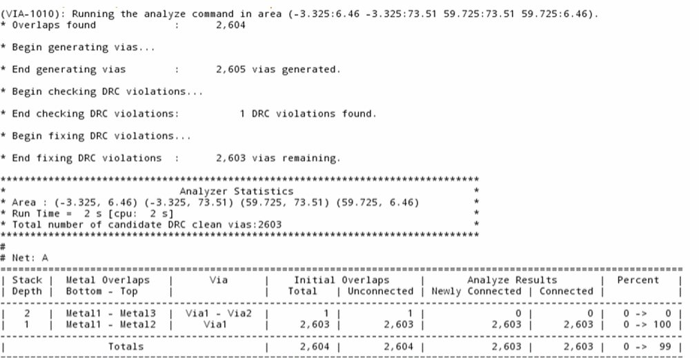
Related Topics
Auto Via Assistant Options Form
Creating a via using Auto Via Assistant
Creating a via using Auto Via Assistant
In Virtuoso Layout Suite EXL and higher tiers use the Create tab in the Auto Via Assistant to create vias automatically at the suggested locations from analysis.
-
In the layout window, choose Window – Assistants – Auto Via Assistant to open Auto Via Assistant.
Alternatively, right-click any empty space on the Layout toolbar and choose to display the Auto Via Assistant.
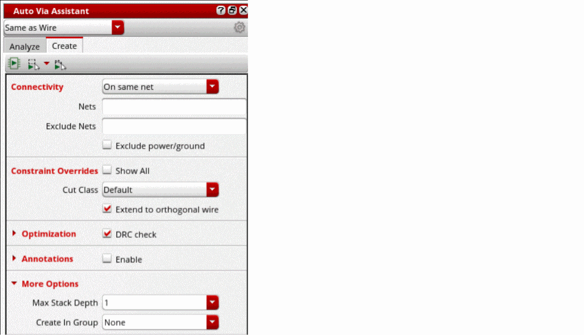 -
Select a constraint group for the creation of vias. 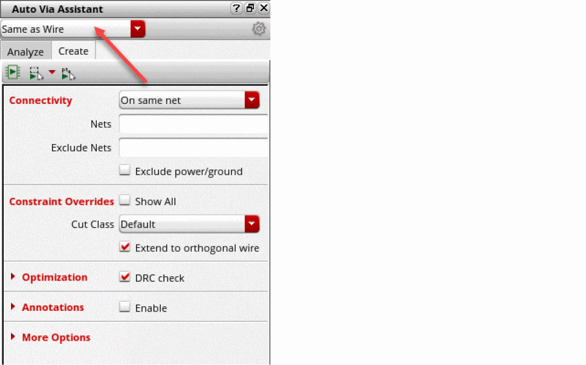
- Specify Connectivity. The options are: On same net, and Ignored.
- Specify net names in the Nets field to create vias for the specified nets.
- Specify net names in the Exclude Nets field to exclude the specified nets from creating vias.
- Select Exclude power/ground option to exclude power and ground nets from creating vias.
- Select Show All option in Constraint Overrides field to see various constraint override options.
-
Specify constraint override options in fields: Cut Class, Min Num Cuts, Alignment, Cut Class Orient, Cut Array Dir, Enclosure Dir, Place via on centerline, Add Metal, Maximize cut, and Extend to orthogonal wire.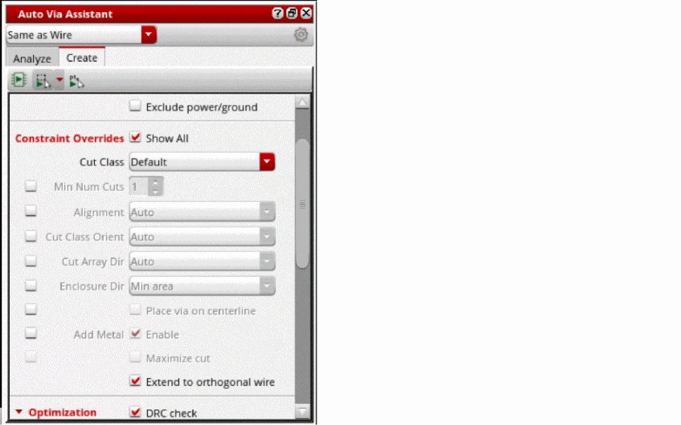
- Specify the optimization options for creating vias in the fields: DRC check, Try with smaller cut classes, Attempt to use bridge vias, Fix DRC on overlap shapes, Processing, and Max Num CPUs.
- Select Enable option in Annotations field to specify different annotation options for creating vias. Specify the annotation options in the fields: Vias adding metal, Vias not adding metal, Vias not retained, and Overlaps with no solution.
- Specify Max Stack Depth, and Create In Group options in More Options field.
-
Click
button to set the via creation options using the Auto Via Assistant Options form. The Auto Via Assistant Options form opens.For example, select Show preview to see a preview of the vias from analysis, select Show report to see an analysis report generated in the CIW, and Create in route to create every new via in a new route. Also, you can select Extend Enclosure Beyond Overlap to extend via enclosures beyond the overlap region between two intersecting shapes.
Specify the options in the available fields for creating auto vias. - Click from the toolbar to create vias in the entire cellview.
- Click 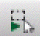 from the toolbar to create vias in a rectangular area, polygon area, or the entire visible area. Select Use entire overlap to use the entire overlapped area for creating vias.
- Click from the toolbar to create vias at the suggested locations.
Related Topics
Auto Via Assistant Options Form
Analyzing a via using Auto Via Assistant
Setting the Technology to Create Vias
The following are the aspects related to the technology setup for creating vias.
Related Topics
Calculation Modes for Via Parameters
Return to top